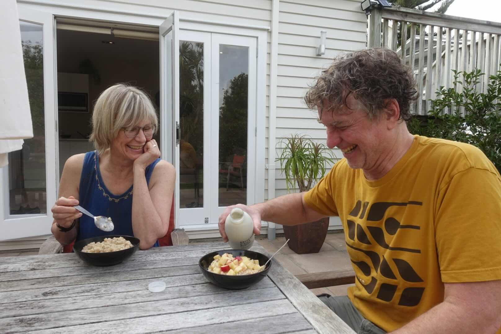
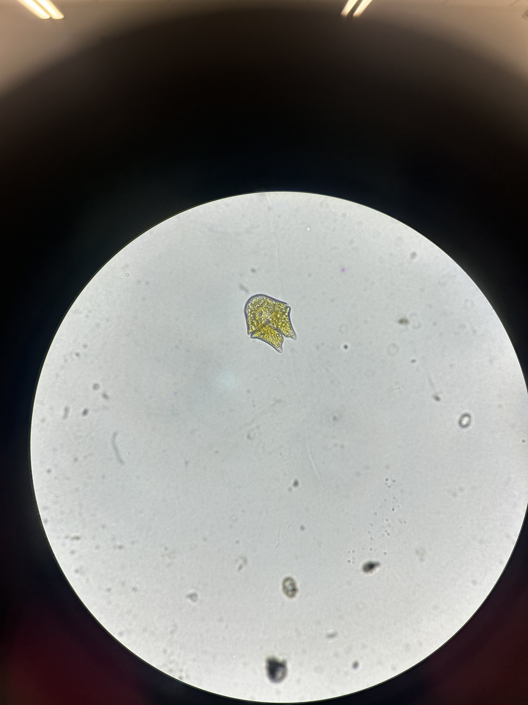
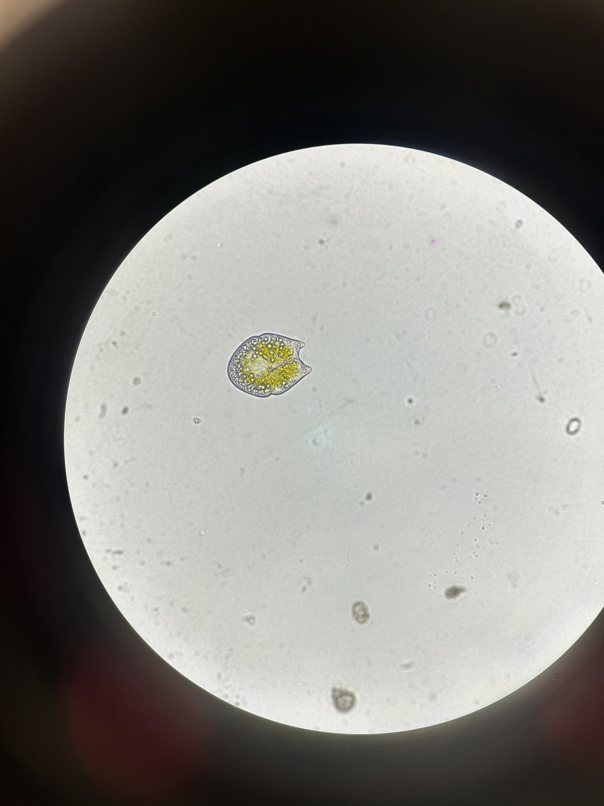
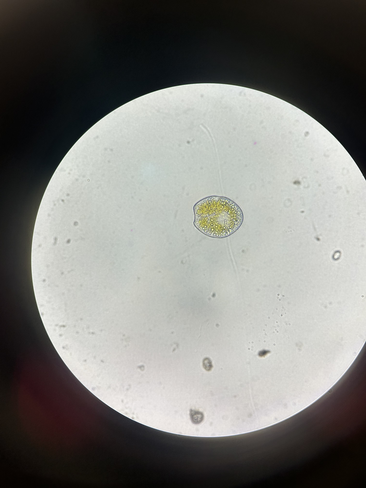
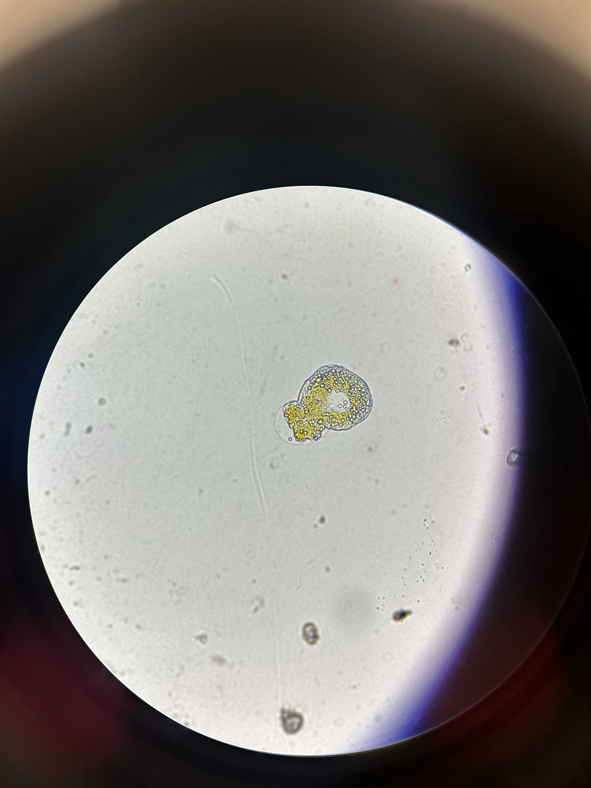
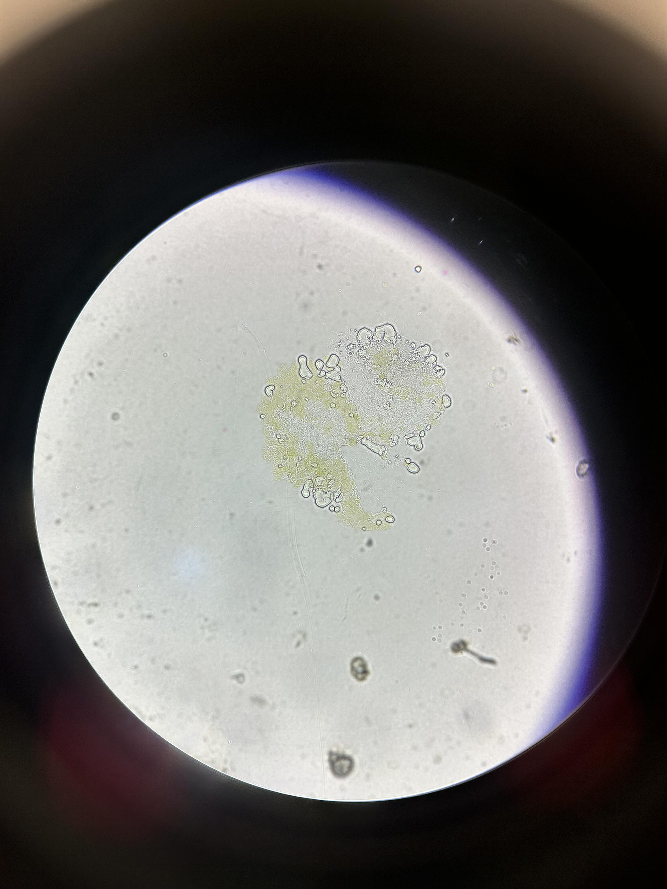
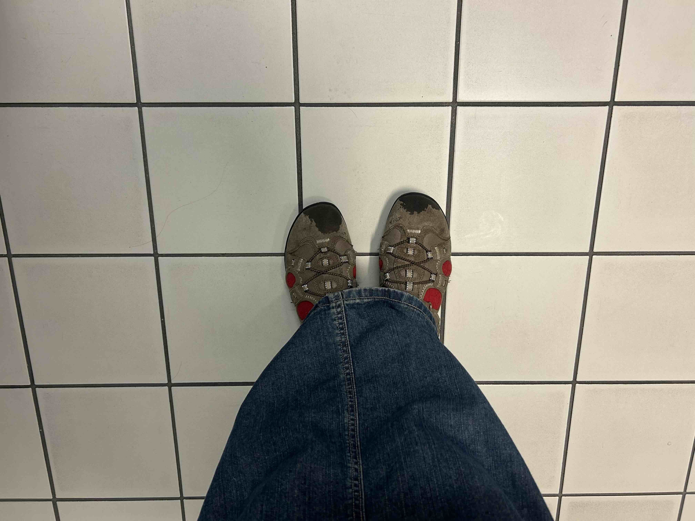

march 19, 2026
hello!!!!!!!!!! star people!!!!!!!!!!!!! are you out there???? in the stars?????? come back!!!!!!!!!!!
i promise this time i will be nice and i will feed you soup dumplings and agedashi tofu and i will braid your hair and read you a book. i love mary oliver! her writing is perfect to me. so much subtly and beauty. i want to write subtly and beautifully! yesterday i read one of her poems and burst into tears. it was very alarming. but then i was glad because sometimes its nice when you feel super strong emotions that make your body physically react. like wow i am a feeling being, i am a real person ok cool. ok this is the poem:
I Don't Want to Lose - Mary Oliver
I don't want to lose a single thread from the intricate brocade of this happiness. I want to remember everything. Which is why I'm lying awake, sleepy but not sleepy enough to give it up. Just now, a moment from a year ago: the early morning light, the deft, sweet gesture of your hand reaching for me.
i think my parents are actually in love. yesterday i found this picture of them from our new zealand trip. i love them so much!

march 12, 2026
i bought a fancy dress today. it is white like a bride's. and when i put it on it was so beautiful i understood exactly what i had to do. so then i did it. rowan said it was the 333 lunar eclipse and to shift into alignment some deaths may have to happen. i said ok that is fine. i am fine with a death or two.
march 5, 2026
the death of a dinoflagellate:





i forget that everytime i am looking at an alga under the microscope that i will be the first and last to look at it. then i take the slide out from the scope and throw the cover slip out and all the little guys go ahhhhhhh into the bin. this death was a little more real. i witnessed its slow decline and final moments. what was it thinking? i mean it doesnt have a brain but it knew for sure. it was too hot under the light and it slowed and stopped swimming. i drew its portrait. and when i finished and looked back to check up on it, all was goo. just a pile of goo.
february 26, 2026
there is something incredibly depressing about yelling into cyberspace.
february 2, 2026
my stomach is not sitting right in my body. i think its from my nap. naps always give me a stomach ache. i dont rlly have anything to say so maybe i will not say anything at all. but i am still writing and typing and i dont know why. sometimes it all feels like that u know? like the days are words that have no meaning that are just going on endlessly without reason. but sometimes i do look back and find some meaning. some story. i have been thinking about pairs of oranges, the dead crow, sleeping animals and coffee rings. i want to string them all up into one garland of thoughts. maybe together they will take on some meaning. but for now i think i will go to sleep.
january 30, 2026
do u think abt the stars ever unless they are right there? recently i haven't been and maybe that's what i am missing. today the rain soaked my shoes and socks entirely. but when that happens and you are 30 minutes from home u have to just let it be. my therapist (yes i have a therapist) today told me to read a poem (the guesthouse by rumi). i read it once, twice, three times. i still find it hard to really comprehend that she is a real person. but reading that poem at least gave me the allusion that she is. that she exists outside of the beige room with the perfectly placed pillows and the tissue box that sits on the table looking at me as i talk. i thought 'how cliche' the first time i came in, tissue box like what i am gonna cry? like i am going to tell u all my secrets and cry about them?? today i used the tissue box. not one, two, three but FOUR tissues. i felt greedy. greedy tears.
i spent an hour writing a poem last night, maybe thats why i failed my cpsc test this morning. when i was at the grocery tonight i was debating that if i could trade the poem for a passing grade would i? i still don't know. i don't think i would. i went to the grocery store for milk but i came back with milk, family size brown sugar miniwheats, bananas, frozen blueberries, a bar of noname dark chocolate, maynards swedish fish and a veggie frozen pizza. and it was all $20!

the beginning of the shoe tragedy.
january 25, 2026
i have been cold for weeks and i cannot shake the feeling that this is all so finite and maybe thats because it rlly is. i am reading everything backwards, remembering moments i am living presently. i was so tired yesterday and i slept for so long and i am still so so very tired. but my room is clean, hair is washed, and fridge is stocked so there is not much to be upset about. i need to just do it. the work. but i find myself so often twiddling my hair looking out of my window imagining a place far away from here where the flowers are blooming and the birds have returned and its warm again.
january 18, 2026
its about discipline. i cannot rely on motivation anymore. i will do this because i have to and it will be hard and uncomfortable but it will be ok. this too shall pass this too shall pass this too shall pass! i will be the sun and take everything i want because thats what suns do.
january 9, 2026
in a panic about my degree and the classes i am in. in a panic about what my plans are tonight. in a panic about what all these people are seeing when they look at me. in a panic about the how my bra is too tight. in a panic about the stupidity of the things im panicking about. in a panic. but truly really not.
giving is not all that hard. and it doesn't rlly take from you. but it does take from your ego. ego always gets in the way. a couple days ago i was wearing my adidas track pants with a green cargo skirt overtop. i went to all my classes and made one or two friends who i will know for 4 months exactly then never see again. after class i took the 25 to amelie's house and watched a disturbing danish film and after was fed some broccoli-pepper-tofu stir fry. i am grateful. i am grateful. i went to go see 'beau travail' at the park theatre (alone) and walked home listening to 'the girl from ipanema' on repeat. t'was a good day!
anyways... look at these photos bodhi took on mayne:


december 23, 2025
merry almost christmas my star folks! life can be drinking sweet milky tea that your mother made you. it is all ok now, even better than ok. i sip the tea and it is so sweet i could cry out. i have two cats on my lap that replaced the one that went away. but that is ok. they are here now, little angel devils that pumpkin would have hated. so maybe good thing he went away. i caught myself smiling doing the dishes the other day. life can make you blush and spin you around and dance before you all silly. sometimes it feels like i just woke up from a deep rest to find a bed of gifts before me. similar to how i woke up this morning from my 10.5 hour slumber to a cortado my papa made me, two playing kittens and an ever refilling plate of crepes. life is beautiful but on pause. pause and rest are good no?? i still just want to go back to it all: to the running water, to the path, to the going, not the staying. i dont know if this makes sense. it doesnt even make sense to me. word vomit to the moon!! to the stars! LIKE BRIAN JONES I WAS BORN TO SWIM TOWARDS A MONTH AGO TOWARDS THE ROLLING STONES TOWARDS ME AND YOU!!!!!!!!